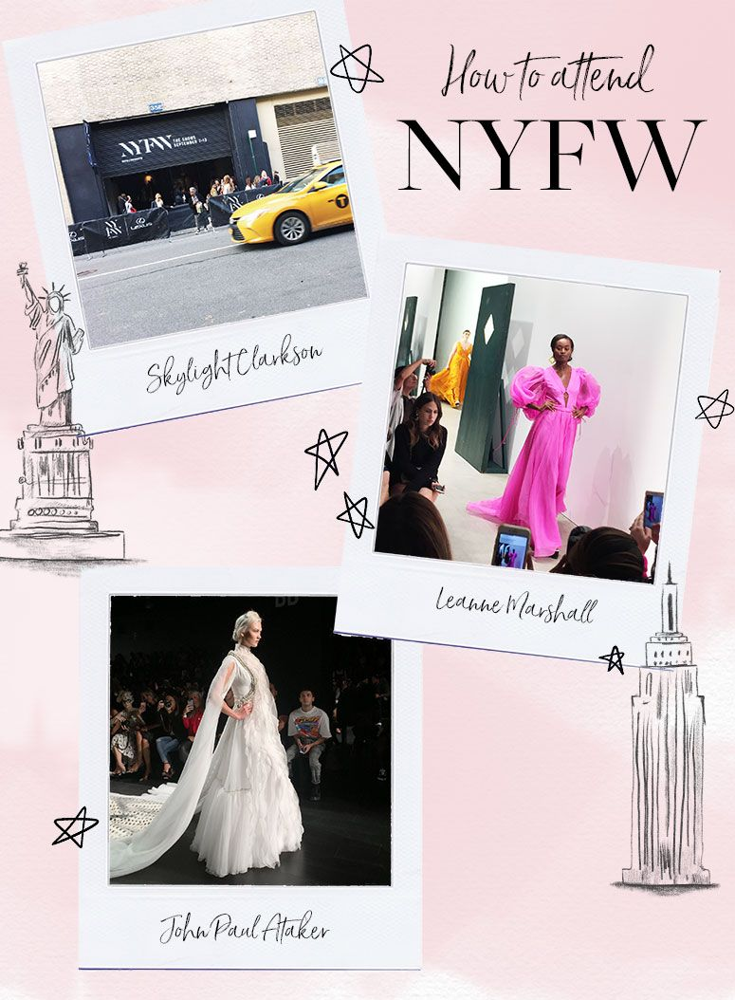
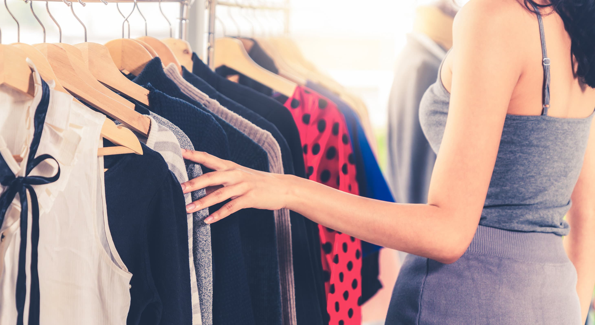
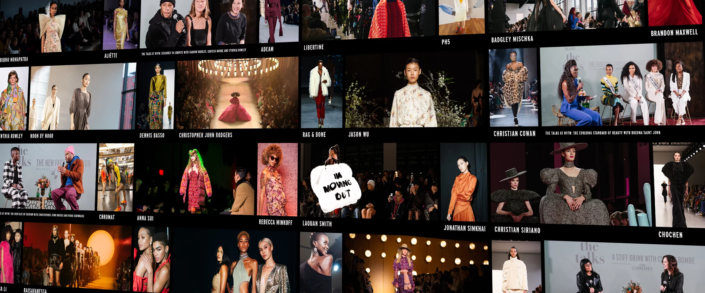

An Insider's Guide to NYFW
You’ve just walked into one of those exclusive rooftop parties...

Getting Tickets & Picking the Shows
Navigating the ticket scene for New York Fashion Week...

Dressing for the Shows
Start with something that speaks to your personal style...

How to Score an Invitation
Getting into NYFW may seem exclusive, but it's possible!